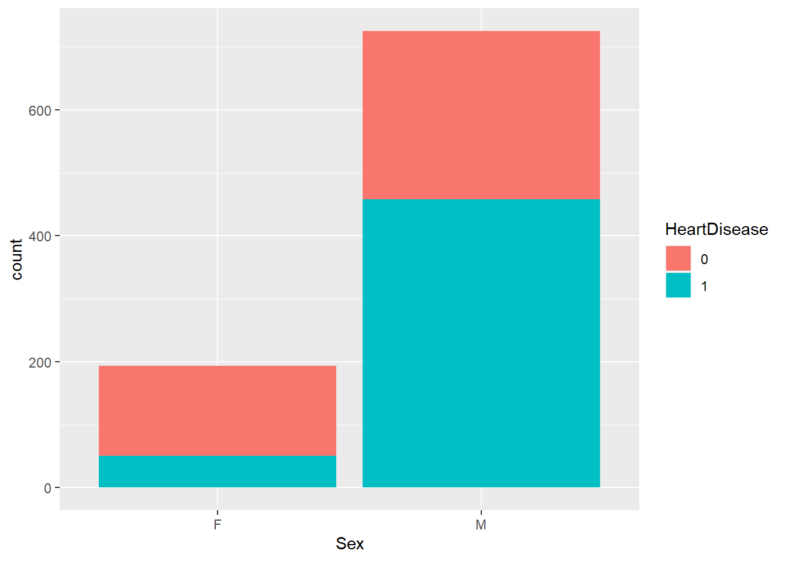
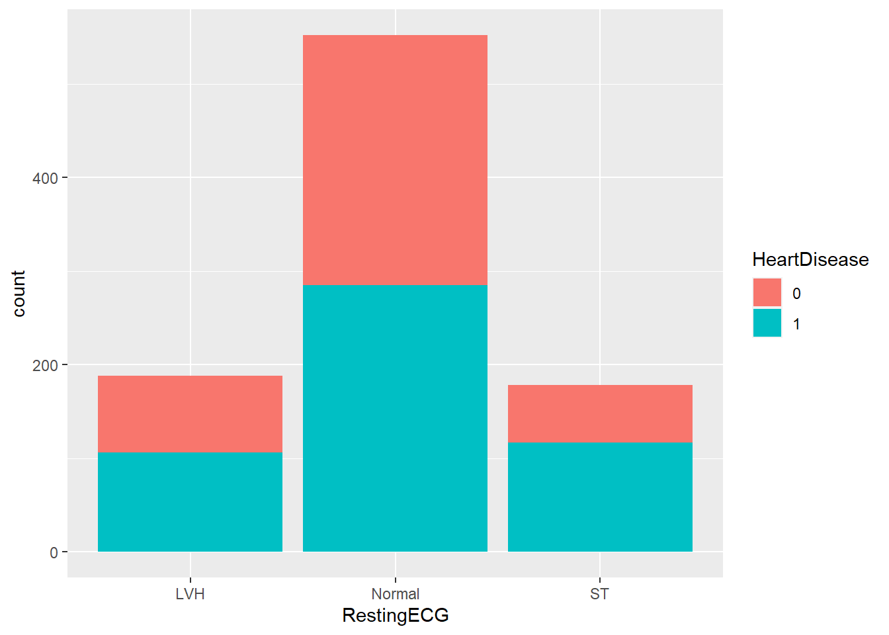
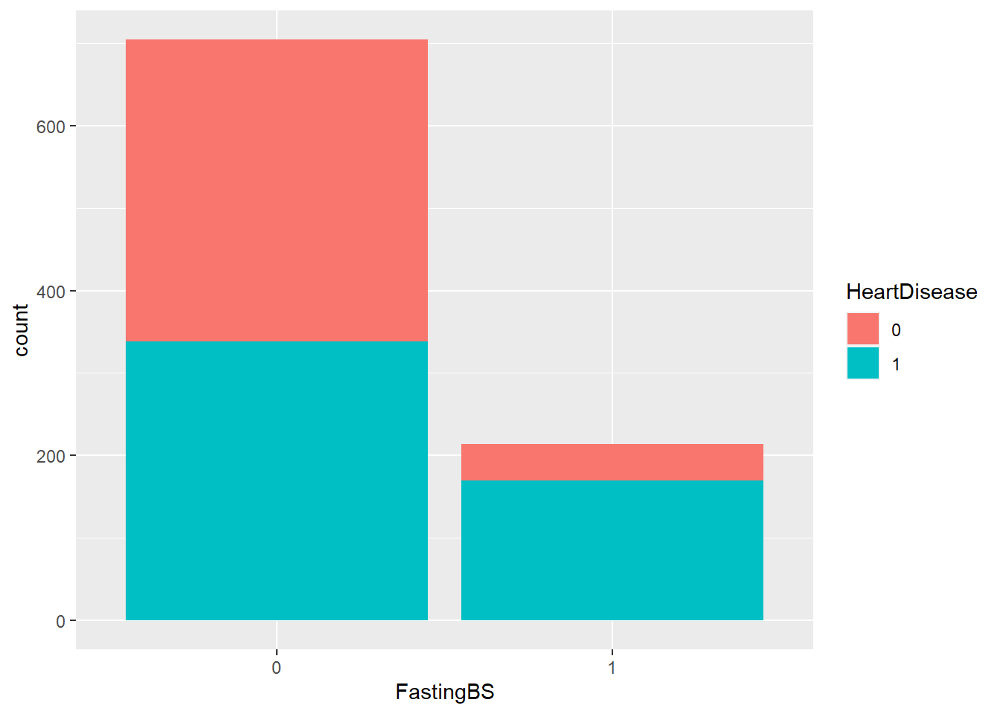
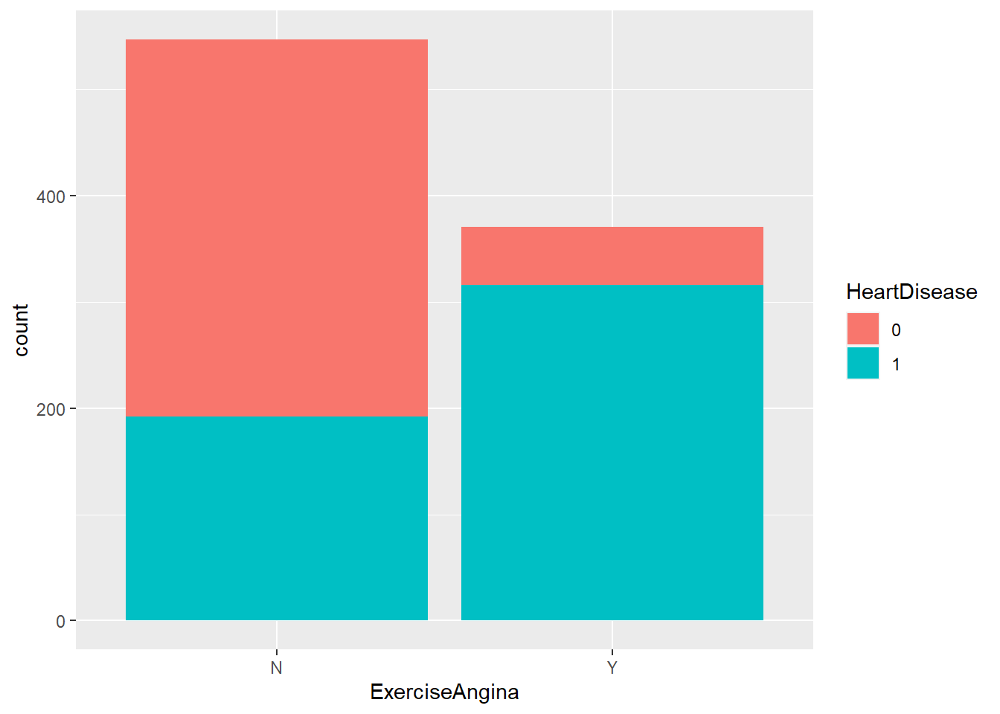
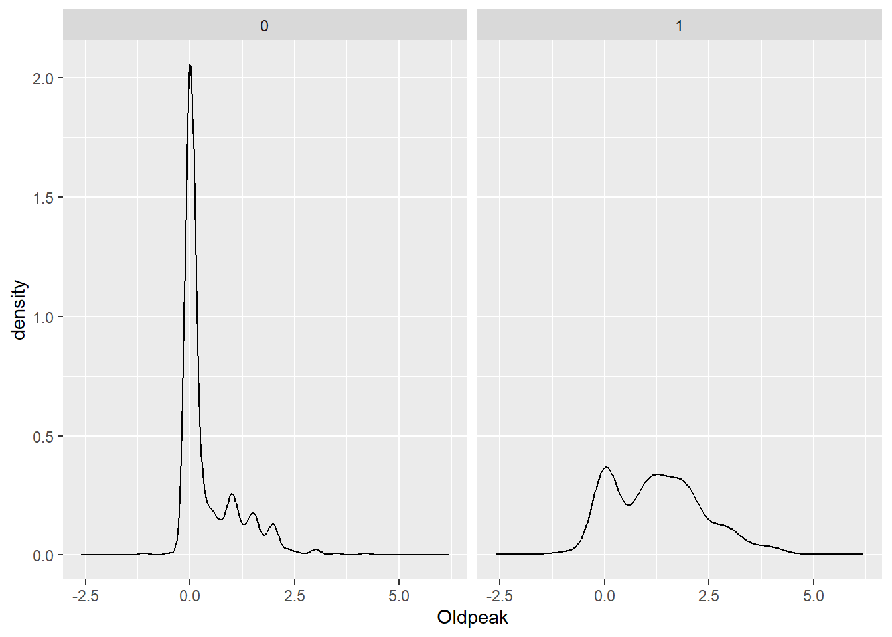

Question 1: What is the purpose of using cross-validation when fitting a random forest model?
The purpose of cross validation in general is to split data multiple ways, do the fitting/testing process, and then combine results. Sometimes when using a training or test set you may not have enough data or you may get a weird split of the data so it can be helpful to split into many folds where you train on the first k-1 folds and test on the kth fold. Then repeat the process. In the context of a random forest model (and bagged tree models in general), this process happens by using out of bag observations. With repeated bootstrap samples, they only use about 2/3 of the data in the full sample so then you have a remaining portion to test on that wasn’t used in the training of the model.
Question 2: Describe the bagged tree algorithm.
The bagged tree algorithm represents bootstrap aggregation. The idea is that you get a bootstrap sample, train tree on this sample, and then resample with replacement and repeat the process B number of times. Then your final prediction is an average of these predictions if using a regression tree or use a majority vote (among other options) for classification trees. This method is more ideal than a single tree because it decreases the variability in the predictions.
Question 3: What is meant by a general linear model?
A general linear model is a model that has a continuous response variable and allows for both continuous and categorical predictors. This could be a simple linear regression, multiple linear regression, among others.
Question 4: When fitting a multiple linear regression model, what does adding an interaction term do? That is, what does it allow the model to do differently as compared to when it is not included in the model?
Adding an interaction term allows you to add a term that accounts for the relationship between two predictor variables through using the notation x1:x2. Then, you can fit a “best saddle” through the points, rather than simply a best plane. This enables you to have a more flexible surface to fit to the data and make predictions.
Question 5: Why do we split our data into a training and test set?
We split our data into a training and a test set so that we can train/fit the model on part of the data and then test how well the model is performing on the other part of the data. By doing this, we ensure that we are not overfitting the model to the data we have and that the model can generalize to data it hasn’t yet seen.
library(tidyverse)
Warning: package 'tidyverse' was built under R version 4.3.3
── Attaching core tidyverse packages ──────────────────────── tidyverse 2.0.0 ──
✔ dplyr 1.1.2 ✔ readr 2.1.4
✔ forcats 1.0.0 ✔ stringr 1.5.0
✔ ggplot2 3.4.2 ✔ tibble 3.2.1
✔ lubridate 1.9.2 ✔ tidyr 1.3.0
✔ purrr 1.0.1
── Conflicts ────────────────────────────────────────── tidyverse_conflicts() ──
✖ dplyr::filter() masks stats::filter()
✖ dplyr::lag() masks stats::lag()
ℹ Use the conflicted package (<http://conflicted.r-lib.org/>) to force all conflicts to become errors
heart_data <-read_csv("heart.csv")
Rows: 918 Columns: 12
── Column specification ────────────────────────────────────────────────────────
Delimiter: ","
chr (5): Sex, ChestPainType, RestingECG, ExerciseAngina, ST_Slope
dbl (7): Age, RestingBP, Cholesterol, FastingBS, MaxHR, Oldpeak, HeartDisease
ℹ Use `spec()` to retrieve the full column specification for this data.
ℹ Specify the column types or set `show_col_types = FALSE` to quiet this message.
# A tibble: 918 × 11
Age Sex ChestPainType RestingBP Cholesterol FastingBS RestingECG MaxHR
<dbl> <chr> <chr> <dbl> <dbl> <fct> <chr> <dbl>
1 40 M ATA 140 289 0 Normal 172
2 49 F NAP 160 180 0 Normal 156
3 37 M ATA 130 283 0 ST 98
4 48 F ASY 138 214 0 Normal 108
5 54 M NAP 150 195 0 Normal 122
6 39 M NAP 120 339 0 Normal 170
7 45 F ATA 130 237 0 Normal 170
8 54 M ATA 110 208 0 Normal 142
9 37 M ASY 140 207 0 Normal 130
10 48 F ATA 120 284 0 Normal 120
# ℹ 908 more rows
# ℹ 3 more variables: ExerciseAngina <chr>, Oldpeak <dbl>, HeartDisease <fct>
#Check for missing values.missing_vals <-colSums(is.na(heart_data))missing_vals
#Make a stacked bar chart of heart disease by gender.#It appears males get heart disease more frequently than females.ggplot(heart_data, aes(x = Sex, fill = HeartDisease)) +geom_bar()

#Density Plot of Resting BP faceted by Heart Disease.#It appears that resting BP is slightly higher in those with heart disease.ggplot(heart_data, aes(x = RestingBP))+geom_density() +facet_wrap(~HeartDisease)

#Boxplots of age by heart disease.#It appears that as age increases, likelihood of heart disease increases as well.ggplot(heart_data, aes(x = Age, y = HeartDisease)) +geom_boxplot()

#Boxplots of cholesterol by heart disease.#Surprisingly, cholesterol appears lower with heart disease, but there is a lot of variability in the non-heart disease group.ggplot(heart_data, aes(x = Cholesterol, y = HeartDisease)) +geom_boxplot()

#Chest pain type and heart disease bar plots.#It appears that ASY chest pain is a strong indicator of heart disease.ggplot(heart_data, aes(x = ChestPainType, fill = HeartDisease)) +geom_bar()

#Make two way contingency table of heart disease and fasting blood sugar. table(heart_data$HeartDisease, heart_data$FastingBS)
0 1
0 366 44
1 338 170
#Means of HR, Age, BP, and chol for those with and without heart disease. #Group with heart disease has lower max HR, higher age, slightly higher BP, and lower cholesterol. heart_data |>group_by(HeartDisease) |>summarize(mean_max_hr =mean(MaxHR),mean_age =mean(Age),mean_bp =mean(RestingBP),mean_chol =mean(Cholesterol))
# A tibble: 918 × 11
Age Sex ChestPainType RestingBP Cholesterol FastingBS RestingECG MaxHR
<dbl> <chr> <chr> <dbl> <dbl> <fct> <chr> <dbl>
1 40 M ATA 140 289 0 Normal 172
2 49 F NAP 160 180 0 Normal 156
3 37 M ATA 130 283 0 ST 98
4 48 F ASY 138 214 0 Normal 108
5 54 M NAP 150 195 0 Normal 122
6 39 M NAP 120 339 0 Normal 170
7 45 F ATA 130 237 0 Normal 170
8 54 M ATA 110 208 0 Normal 142
9 37 M ASY 140 207 0 Normal 130
10 48 F ATA 120 284 0 Normal 120
# ℹ 908 more rows
# ℹ 3 more variables: ExerciseAngina <chr>, Oldpeak <dbl>, HeartDisease <fct>
library(caret)
Warning: package 'caret' was built under R version 4.3.3
Loading required package: lattice
Attaching package: 'caret'
The following object is masked from 'package:purrr':
lift
heart_data
# A tibble: 918 × 11
Age Sex ChestPainType RestingBP Cholesterol FastingBS RestingECG MaxHR
<dbl> <chr> <chr> <dbl> <dbl> <fct> <chr> <dbl>
1 40 M ATA 140 289 0 Normal 172
2 49 F NAP 160 180 0 Normal 156
3 37 M ATA 130 283 0 ST 98
4 48 F ASY 138 214 0 Normal 108
5 54 M NAP 150 195 0 Normal 122
6 39 M NAP 120 339 0 Normal 170
7 45 F ATA 130 237 0 Normal 170
8 54 M ATA 110 208 0 Normal 142
9 37 M ASY 140 207 0 Normal 130
10 48 F ATA 120 284 0 Normal 120
# ℹ 908 more rows
# ℹ 3 more variables: ExerciseAngina <chr>, Oldpeak <dbl>, HeartDisease <fct>
Dummy Variable Object
Formula: HeartDisease ~ Sex + ExerciseAngina + ChestPainType + RestingECG
5 variables, 1 factors
Variables and levels will be separated by '.'
A less than full rank encoding is used
set.seed(100)trainIndex <-createDataPartition(heart_final$HeartDisease, p =0.7, list =FALSE)heartTrain <- heart_final[trainIndex, ]heartTest <- heart_final[-trainIndex, ]
kNN
trctrl <-trainControl(method ="repeatedcv", number =10, repeats =3)set.seed(50)#Based on EDA, I chose to use MaxHR, Age, and Cholesterol in the model. It didn't seem like there was a significant difference in blood pressure.knn_fit <-train(HeartDisease ~ MaxHR + Age + Cholesterol,data = heartTrain, method ="knn",trControl=trctrl,preProcess =c("center", "scale"),tuneGrid =data.frame(k =1:40))#It appears that the best fit was using 30 neighbors as this gave the highest accuracy.knn_fit
k-Nearest Neighbors
643 samples
3 predictor
2 classes: '0', '1'
Pre-processing: centered (3), scaled (3)
Resampling: Cross-Validated (10 fold, repeated 3 times)
Summary of sample sizes: 579, 579, 579, 578, 578, 580, ...
Resampling results across tuning parameters:
k Accuracy Kappa
1 0.6428697 0.2740297
2 0.6562897 0.3036989
3 0.6983794 0.3860154
4 0.6875383 0.3660842
5 0.7123630 0.4141552
6 0.7065675 0.4026903
7 0.7226019 0.4343710
8 0.7178823 0.4244940
9 0.7242295 0.4365409
10 0.7164162 0.4221795
11 0.7185081 0.4253898
12 0.7174674 0.4242396
13 0.7174424 0.4232688
14 0.7200385 0.4285663
15 0.7242062 0.4370558
16 0.7267949 0.4424605
17 0.7288216 0.4471307
18 0.7252399 0.4395402
19 0.7231403 0.4362711
20 0.7231571 0.4361799
21 0.7257369 0.4409208
22 0.7251833 0.4401953
23 0.7262330 0.4427415
24 0.7288046 0.4474620
25 0.7278611 0.4457275
26 0.7278608 0.4459799
27 0.7283651 0.4470826
28 0.7294068 0.4488185
29 0.7288862 0.4478325
30 0.7278283 0.4459984
31 0.7298958 0.4502768
32 0.7293913 0.4487651
33 0.7299196 0.4499671
34 0.7288619 0.4481134
35 0.7268187 0.4437707
36 0.7263141 0.4424222
37 0.7247185 0.4398075
38 0.7236926 0.4374493
39 0.7236926 0.4382213
40 0.7257767 0.4422740
Accuracy was used to select the optimal model using the largest value.
The final value used for the model was k = 33.
#Test the model on the test data set.knn_predict <-predict(knn_fit, newdata = heartTest)confusionMatrix(knn_predict, heartTest$HeartDisease)
Confusion Matrix and Statistics
Reference
Prediction 0 1
0 79 32
1 44 120
Accuracy : 0.7236
95% CI : (0.6667, 0.7756)
No Information Rate : 0.5527
P-Value [Acc > NIR] : 4.036e-09
Kappa : 0.4358
Mcnemar's Test P-Value : 0.207
Sensitivity : 0.6423
Specificity : 0.7895
Pos Pred Value : 0.7117
Neg Pred Value : 0.7317
Prevalence : 0.4473
Detection Rate : 0.2873
Detection Prevalence : 0.4036
Balanced Accuracy : 0.7159
'Positive' Class : 0
#This correctly predicts heart disease about 71.64% of the time.
Logistic Regression
#Not using dummy variables.set.seed(100)trainIndex <-createDataPartition(heart_data$HeartDisease, p =0.7, list =FALSE)heartTrain <- heart_data[trainIndex, ]heartTest <- heart_data[-trainIndex, ]heartTrain
# A tibble: 643 × 11
Age Sex ChestPainType RestingBP Cholesterol FastingBS RestingECG MaxHR
<dbl> <chr> <chr> <dbl> <dbl> <fct> <chr> <dbl>
1 40 M ATA 140 289 0 Normal 172
2 49 F NAP 160 180 0 Normal 156
3 37 M ATA 130 283 0 ST 98
4 48 F ASY 138 214 0 Normal 108
5 54 M NAP 150 195 0 Normal 122
6 39 M NAP 120 339 0 Normal 170
7 45 F ATA 130 237 0 Normal 170
8 48 F ATA 120 284 0 Normal 120
9 58 M ATA 136 164 0 ST 99
10 54 F ATA 120 273 0 Normal 150
# ℹ 633 more rows
# ℹ 3 more variables: ExerciseAngina <chr>, Oldpeak <dbl>, HeartDisease <fct>
#Logistic with just some main interaction terms.log_fit_1 <-train(HeartDisease ~ ChestPainType + Age + Sex,data = heartTrain,method ="glm",family ="binomial",preProcess =c("center", "scale"),trControl = trctrl)log_fit_1
#See which ones predicted correctly on test set.confusionMatrix(data = heartTest$HeartDisease, reference =predict(log_fit_1, newdata=heartTest))
Confusion Matrix and Statistics
Reference
Prediction 0 1
0 91 32
1 22 130
Accuracy : 0.8036
95% CI : (0.7517, 0.8489)
No Information Rate : 0.5891
P-Value [Acc > NIR] : 2.979e-14
Kappa : 0.5998
Mcnemar's Test P-Value : 0.2207
Sensitivity : 0.8053
Specificity : 0.8025
Pos Pred Value : 0.7398
Neg Pred Value : 0.8553
Prevalence : 0.4109
Detection Rate : 0.3309
Detection Prevalence : 0.4473
Balanced Accuracy : 0.8039
'Positive' Class : 0
#80.36% accuracy on test set.#Logistic model using all predictors.log_fit_2 <-train(HeartDisease ~ .,data = heartTrain,method ="glm",family ="binomial",preProcess =c("center", "scale"),trControl = trctrl)log_fit_2
Confusion Matrix and Statistics
Reference
Prediction 0 1
0 93 30
1 20 132
Accuracy : 0.8182
95% CI : (0.7674, 0.8619)
No Information Rate : 0.5891
P-Value [Acc > NIR] : 3.656e-16
Kappa : 0.6294
Mcnemar's Test P-Value : 0.2031
Sensitivity : 0.8230
Specificity : 0.8148
Pos Pred Value : 0.7561
Neg Pred Value : 0.8684
Prevalence : 0.4109
Detection Rate : 0.3382
Detection Prevalence : 0.4473
Balanced Accuracy : 0.8189
'Positive' Class : 0
#81.8% accuracy on test set.#The best model appears to be the second logistic regression that uses all predictors.#Below is a summary.summary(log_fit_2)
Call:
NULL
Coefficients:
Estimate Std. Error z value Pr(>|z|)
(Intercept) 0.39472 0.11653 3.387 0.000706 ***
Age 0.18806 0.13052 1.441 0.149634
SexM 0.49881 0.11849 4.210 2.56e-05 ***
ChestPainTypeATA -0.68065 0.13195 -5.159 2.49e-07 ***
ChestPainTypeNAP -0.60781 0.11274 -5.391 7.00e-08 ***
ChestPainTypeTA -0.28411 0.09940 -2.858 0.004260 **
RestingBP 0.09367 0.11800 0.794 0.427306
Cholesterol -0.22539 0.13007 -1.733 0.083110 .
FastingBS1 0.48434 0.12344 3.924 8.72e-05 ***
RestingECGNormal -0.08118 0.13997 -0.580 0.561936
RestingECGST -0.20094 0.14662 -1.370 0.170531
MaxHR -0.36078 0.13154 -2.743 0.006094 **
ExerciseAnginaY 0.70405 0.13003 5.414 6.15e-08 ***
Oldpeak 0.47241 0.12868 3.671 0.000241 ***
---
Signif. codes: 0 '***' 0.001 '**' 0.01 '*' 0.05 '.' 0.1 ' ' 1
(Dispersion parameter for binomial family taken to be 1)
Null deviance: 883.97 on 642 degrees of freedom
Residual deviance: 516.64 on 629 degrees of freedom
AIC: 544.64
Number of Fisher Scoring iterations: 5